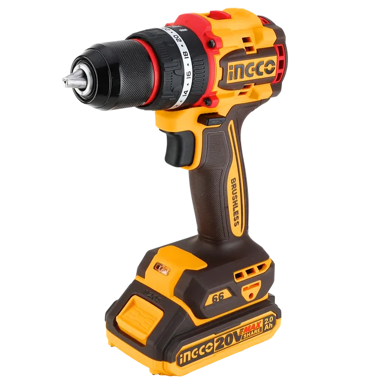

El trabajo que vas a hacer define la función, no al revés.
La batería y el cargador pesan en el costo total del kit.
Dos publicaciones del mismo modelo pueden traer kits distintos.
Función, plataforma de batería y contenido del kit, modelo por modelo.